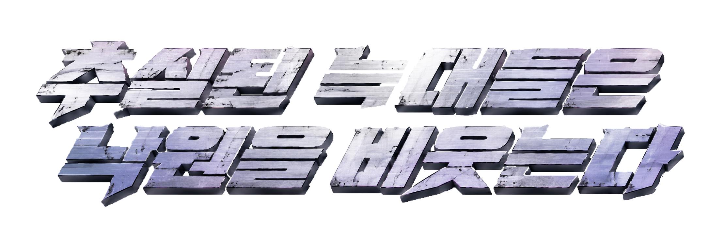
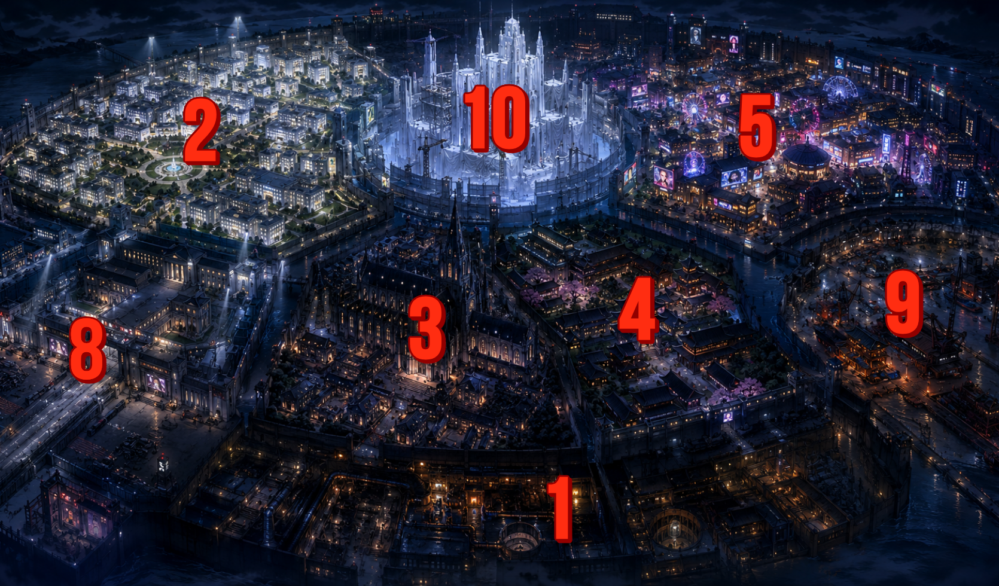

본래 목적
각국은 늑대사태 이후 하나의 결론에 도달했다. “늑대를 박멸할 수 없다.” 그렇다면 최소한 인간만 안전하게 살 수 있는 구역을 만들자. 아케디아는 그렇게 시작된 인간전용 유토피아 구역 계획이다.
PROJECT WOLFCRY / CHUSILWOLF

WORLD / WOLF INCIDENT
이 디스토피아 세계는 인간과 괴물의 단순한 전쟁이 아니다. 인간 사회 내부에서 무작위로 태어나는 재난이 가족, 법, 국가, 종교, 윤리를 계속 뒤집어놓는 장기 붕괴 상태다.
MAIN STAGE / ACAEDIA
인간이 절대적 안전을 꿈꾸며 만든 도시. 그러나 절대적 인간성도, 절대적 순수성도, 절대적 분리도 불가능하다는 사실을 깨닫고 체념에 빠진 장소.
각국은 늑대사태 이후 하나의 결론에 도달했다. “늑대를 박멸할 수 없다.” 그렇다면 최소한 인간만 안전하게 살 수 있는 구역을 만들자. 아케디아는 그렇게 시작된 인간전용 유토피아 구역 계획이다.
Continuity Reassignment System. 변모 대응 직무승계 시스템. 공식적으로는 업무 연속성 장치지만, 루포 측은 이를 “목줄 시스템”이라 부른다.
프로젝트 막바지 총괄 변모로 체계의 한계가 드러났고, 결국 인간담당자와 루포담당자가 공동관리하는 기묘한 도시가 되었다.

UNDERGROUND / INTERIOR FACILITIES 지도 미표시 구역
CHARACTER ARCHIVE
각 인물은 선악이 아니라, 하나의 뒤틀린 질문으로 움직인다. 카드를 선택하면 명함 기록이 열린다.
CLASSIFIED / LOCKED
아직 당신이 열람하기엔 준비가 부족하군요.